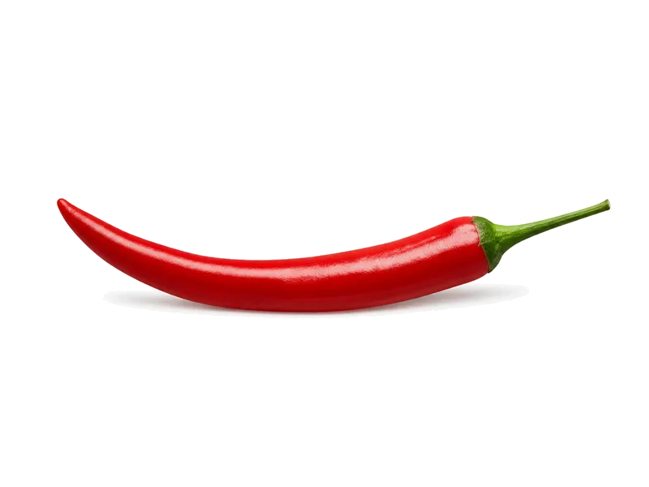

Warzywa
Papryka chili
Papryka chili: 1.9 g białka, 40 kcal, 8.8 g węglowodanów i 0.4 g tłuszczu na 100 g. Kategoria: Warzywa.
Kalorie40 kcalna 100 g
Białko / proteiny1.9 g
Węglowodany8.8 g
Tłuszcz0.4 g
Cena (szac.)~20,00 złza 100 g
Ceny zaktualizowano: sierpień 2026 (szacunek — ceny w popularnych supermarketach)
Porcja: porcja (100g)
| Kalorie | 40 kcal |
|---|---|
| Białko | 1.9 g |
| Węglowodany | 8.8 g |
| Tłuszcz | 0.4 g |
| Cena (szac.) | ~20,99 zł |
Szczegółowe składniki odżywcze na 100 g
| Wartość energetyczna (kalorie) | 40 kcal |
|---|---|
| Białko (proteiny) | 1.9 g |
| Węglowodany | 8.8 g |
| Tłuszcz | 0.4 g |
| Tłuszcze nasycone | 0.1 g |
| Tłuszcze nienasycone | 0.3 g |
| Witaminy i minerały (skrót) | Witamina C, Witamina A, Witamina B6 |
| Współczynnik kcal / 1 g białka | 21.1 |
| Cena produktu (szac. za 100 g) | ~20,00 zł |
| Cena za 100 g białka (szac.) | ~1104,74 zł |
Witaminy i minerały na 100 g
Ilość w 100 g produktu oraz orientacyjny % dziennego zapotrzebowania (RDA) dla dorosłej osoby. Żelazo wg normy dla kobiet; sód jako % limitu. Wartości typowe (USDA / tabele żywieniowe / etykiety) — mogą się różnić między markami.
-
Witamina A 157 µg
-
Witamina C 80 mg
-
Witamina E 0.37 mg
-
Witamina K 4.9 µg
-
Witamina B1 (tiamina) 0.06 mg
-
Witamina B2 (ryboflawina) 0.08 mg
-
Witamina B3 (niacyna) 0.98 mg
-
Witamina B5 0.32 mg
-
Witamina B6 0.29 mg
-
Witamina B9 (foliany) 46 µg
-
Wapń 10 mg
-
Żelazo 0.4 mg
-
Magnez 12 mg
-
Fosfor 26 mg
-
Potas 211 mg
-
Cynk 0.3 mg
-
Miedź 70 µg
-
Mangan 0.12 mg
-
Sód 3 mg